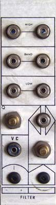

|
Classic Serge

The following are presented for educational/historic purposes only and are not to scale. These designs are copyright Serge Tcherepnin. Some info on the 1973 variant of the VCF: Note that the component side photo is NOT of my unit, but of a similar but later model. The values are taken from my version of the module where readable. Some values have been taken from the board in the photo, where they generally seemed to agree with the little that remained of my components. Some values have been taken off the web schematic. Why? Because my unit was encased in resin that failed to cure properly. The result was the ink vanished off many components, resistor bodies dissolved etc. No wonder it didn't work! Transistors The transistors are proving to be difficult to identify due to the resin on the boards erasing much of the text. I'm pretty sure on the 2N4248s (2N4__8, 2N424_, __4248, _____). The FETs are a different matter. The metal can FETs in the photo apparently have "FN1927 7012" written on them. Mine are white bodied with black epoxy caps and one reads something like "ITF4340 (symbol) 7206" (ITE4340??). The other is blank. Most likely the last 4 digits of each is the manufacture date. I have no data on anything with those numbers (or obvious derivatives 2N1927 etc).
PCB connections:
Page design copyright 1999 by Ken Stone
|
{kind=link}
{kind=link}